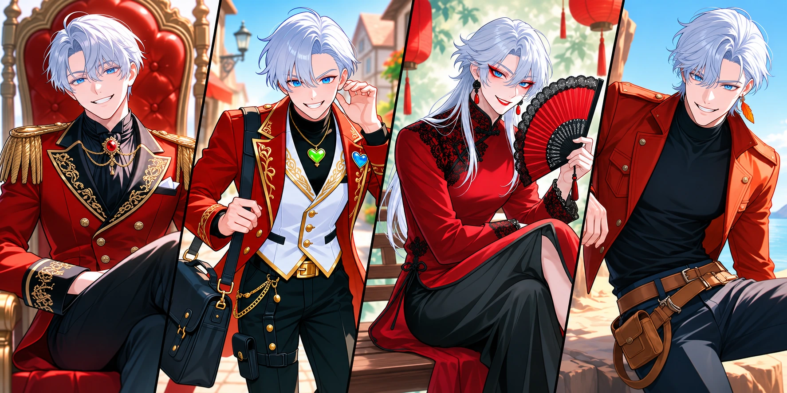
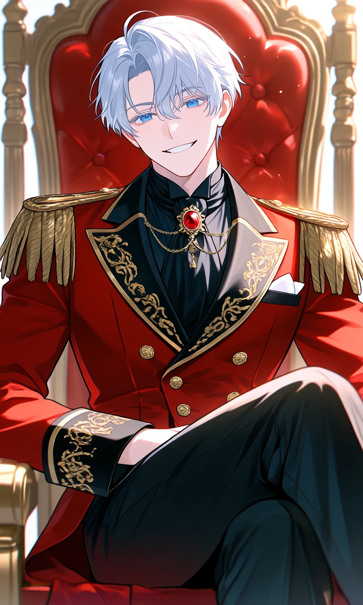
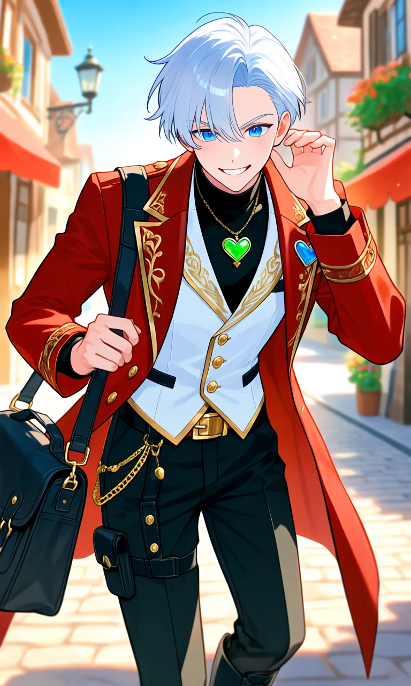
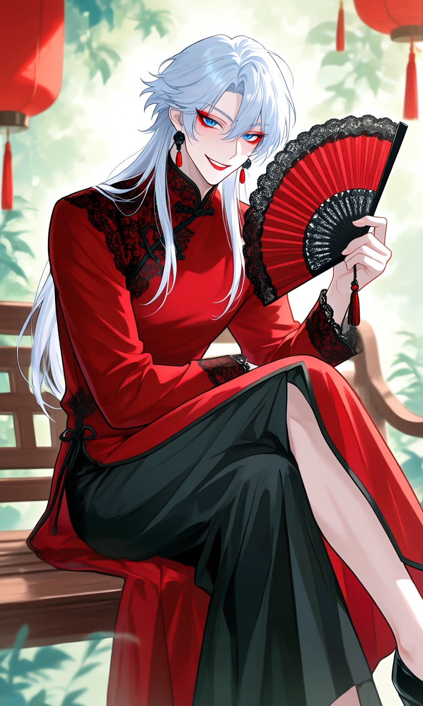
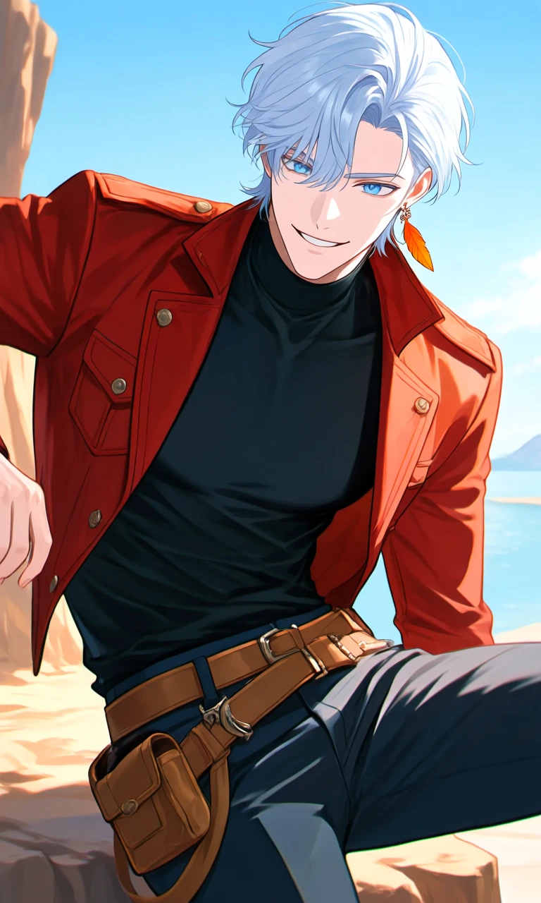

Henry
Male · Human

Season 1


Character Prompt
A prince with short, softly tousled white hair, side-swept bangs, and blue eyes.
Main Outfit
An elegant red princely tailcoat with gold trim, decorative gold buttons, structured shoulders, and gold shoulder epaulettes. The coat has broad lapels with black inset panels, ornate gold embroidery, and long split tails. Black cuffs feature matching gold embroidery. Beneath it, he wears a black high-collared shirt and a black cravat secured with a red gemstone brooch and delicate gold chains. A neatly folded white pocket square and tailored black trousers complete the ensemble.
Season 2


Character Prompt
The man has short white hair with asymmetrical bangs and blue eyes.
Main Outfit
He is wearing a white long vest with gold trim and gold buttons, a long open red jacket with gold trim, black pants, utility belt, black undershirt. He has a messenger bag. He is wearing black boots, green heart charm jewel necklace, blue heart jewel pin, and gold belt buckle with gold belt chains.
Cross-dressing


Character Prompt
The man has long white hair with layers and v-bangs. He looks beautiful. He has sharp blue eyes with long eyelashes. He has red lips, red make-up, light red eyeshadow.
Main Outfit
He is cross-dressing with a red dress with black lace trim, black underskirt, and a long skirt slit showing off his leg. He is wearing black heels, holding a red fan with black trim. He has black and red drop earrings.
Time-skip


Character Prompt
An adult prince with short, softly tousled white hair, side-swept bangs, and blue eyes. He is wearing an orange feather drop earring on his left ear.
Main Outfit
He is wearing a black under shirt, black pants, and open red jacket. He has a fantasy utility belt on.